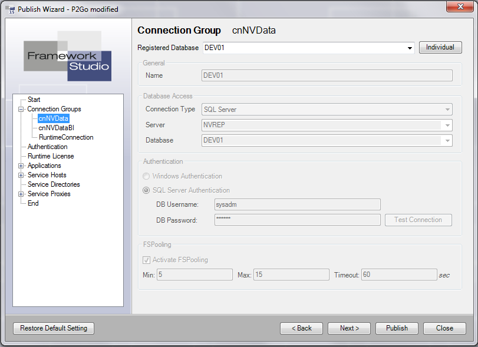
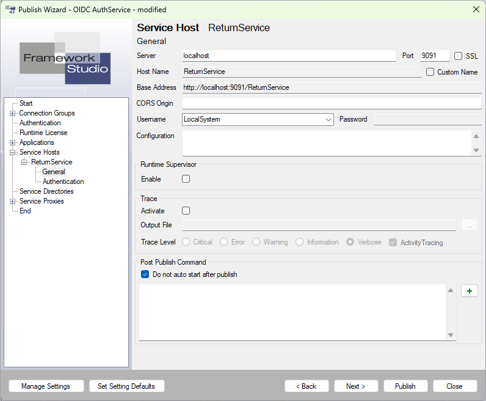
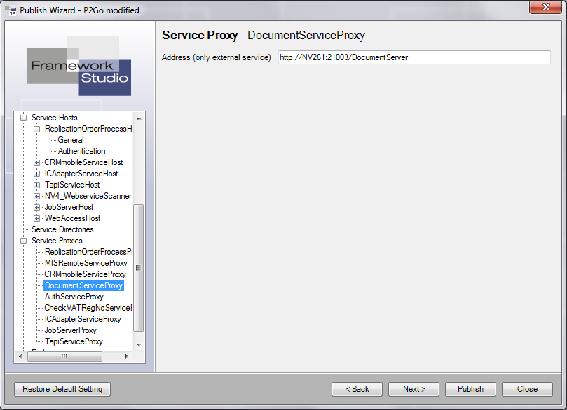

Publish Wizard
Der Publish-Wizard wird verwendet, wenn mit Framework Studio entwickelte Applikationen und Dienste (Service Hosts) lokal veröffentlicht (installiert) werden sollen. Gestartet wird der Publish-Wizard über den Menüeintrag Tools / Publish Wizard.
Der Publish-Wizard arbeitet grundsätzlich wie bei Wizards üblich. Man kann sich mit den Buttons Back und Next durch die verschiedenen Einstellungen navigieren.
Um gezielt eine bestimmte Einstellung zu ändern kann man diese auch direkt über den Baum anwählen.
Button Restore Default Settings: Sämtliche Einstellungen, die im Publish-Wizard definiert wurden, werden verworfen. Damit wird alles auf die Default-Einstellungen zurückgestellt. Die Default-Einstellungen werden aus der FSDomain gelesen.
Button Back, Next: Zur vorherigen bzw. nächsten Einstellung navigieren.
Button Publish: Installiert die Umgebung. Es werden die Applications und Services auf dem Rechner installiert.
Siehe auch Registerkarte End
Button Close: Schließt den Publish-Wizard. Die geänderten Einstellungen werden in dem aktuellen User-Setting gespeichert.
Start
Installation Name
Hier muss ein eindeutiger Name für die Installation angegeben werden. Das ist vor allem dann wichtig, wenn man mehrere verschiedene Umgebungen installieren möchte.
Framework Studio merkt sich unter diesen Namen alle erzeugten Verzeichnisse und Dienste. Wird eine Umgebung erneut gepublished, dann wird erst alles, was unter diesem Namen installiert wurde entfernt, bevor die neuen Dateien rausgeschrieben werden. Standardmäßig wird der Name des aktuellen Packages vorbelegt.
Windows Service Prefix
Wenn Services als Windows Dienst installiert werden, dann muss Framework Studio diesen Diensten einen eindeutigen Namen geben. Als Dienst-Name wird der Name des Services verwendet. Damit bei mehreren unterschiedlichen Installationen auf einem Rechner die Dienst-Namen eindeutig bleiben, kann man hier einen Prefix angeben, der dem Dienst-Namen vorangestellt werden soll.
Standardmäßig wird der Name des aktuellen Packages vorbelegt.
Server-Culture
Hier kann eine Culture definiert werden (z.B: de-DE, de-CH oder en-US) mit der die Anwendung ausgeführt werden soll.
Dies wirkt sich auf Culture-spezifische Aktionen wie z.B. Zahlen- und Datums-Formate aus.
Erfolgt keine Angabe, dann wird die Culture des Betriebssystems verwendet.
Client-Timeout
Der Java-Client meldet sich in der Regel alle 2 Minuten beim Server - auch wenn der Benutzer keine Aktionen ausführt. Bleiben diese Meldungen aus beendet der Broker die entsprechende Session nach dem definierten Timeout. Dadurch werden Lizenzen und Ressourcen freigegeben, wenn ein Benutzer z.B. seinen Rechner ausschaltet ohne den Client zuvor zu beenden. Der Standard-Wert ist 5 Minuten.
Logging / Tracing
Hier kann definiert werden, ob und in welche Ordner protokolliert werden soll.
Warning
Beide Protokollierung erzeugen große Daten-Mengen. Die Protokolle sollten nur gezielt in konkreten Situationen aktiviert werden.
Checkbox Session Trace: Diese Checkbox aktiviert das Session Trace. Dazu muss ein entsprechender Folder angegeben werden, in dem die Daten protokolliert werden sollen. Ist die Checkbox nicht gesetzt, dann hat ein ggf. definierter Ordner keine Funktion.
Checkbox Broker XML: Ist diese Checkbox gesetzt, dann werden alle Broker-Requests und Responses als XML-Datei gespeichert. Das kann hilfreich sein um ganz konkrete Probleme im Detail zu analysieren. Dazu muss ein entsprechender Folder angegeben werden, in dem die Daten protokolliert werden sollen. Ist die Checkbox nicht gesetzt, dann hat ein ggf. definierter Ordner keine Funktion.
Warning
In den XML-Dateien sind ALLE Daten enthalten, die ein Benutzer am Client eingibt und angezeigt bekommt. Das kann auch benutzerbezogene und sensible umfassen - insbesondere in produktiven Umgebungen.
Button Revoke Release
Mit diesem Button wird die komplette Umgebung deinstalliert. Dabei wird alles das deinstalliert, was unter dem angegebenen Installations-Namen installiert wurde.
Button Configure Servernames
Mit diesem Button wird ein Dialog geöffnet, mit dem Server, welche einen vom internen Namen abweichenden externen Namen haben, konfiguriert werden können.
Mit dem Button New  wird in der linken Listbox ein neuer Eintrag angelegt. Dort werden alle Server mit ihrem internen Namen aufgeführt.
wird in der linken Listbox ein neuer Eintrag angelegt. Dort werden alle Server mit ihrem internen Namen aufgeführt.
Mit dem Button Delete wird der Eintrag, den Sie in der linken Listbox ausgewählt haben, gelöscht.
Im Eingabefeld Internal server name kann der interne Name bzw. die IP-Adresse für den Eintrag angegeben werden, den Sie in der linken Listbox ausgewählt haben.
Im Eingabefeld Existing external server names werden zu einem Eintrag, den Sie in der linken Listbox ausgewählt haben, alle externen Servernamen angegeben. Gibt es mehrere externe Namen für einen Server, so müssen die Namen dort getrennt durch Zeilenumbrüche eingegeben werden.
Mit dem Button OK werden alle Änderungen bestätigt und der Dialog geschlossen. Mit dem Button Cancel werden alle Änderungen verworfen.
Button Session Logging Analyzer
Dieser Button öffnen den Session Logging Analyzer und meldet ihn automatisch am Runtime-Repository an.
Connection Groups
Hier können die Verbindungseinstellungen für die verschiedenen Connection Groups definiert werden. Die RuntimeConnection ist die Verbindung zum Repository.

Combobox Registerkarte Database: Hier kann eine Registerkarte Database ausgewählt werden. Die Angaben aus der Registerkarte Database werden entsprechend angezeigt. Diese Angaben werden dynamisch aus den Registered Databases gelesen. Wenn sich also dort die Angaben ändern, werden diese auch hier verwendet.
Button Individual: Mit diesem Button kann man eine individuelle Verbindung definieren. Die Felder für die Verbindungsdaten werden freigeschaltet und können entsprechend definiert werden.
Note
Diese Daten gehen verloren, wenn aus der Combobox eine Datenbank ausgewählt wird.
Wenn eine Verbindung häufiger verwendet wird, dann ist es empfehlenswert, dafür eine Registerkarte Database anzulegen und diese dann hier auszuwählen.
Authentication
Hier können die Grundeinstellungen für die Authentication definiert werden.
Im Eingabefeld Default User wird der Name des Benutzers angegeben, der bei eingeschalteter Authentifizierung von der mit Framework Studio erstellten Applikation automatisch verwendet wird, solange noch gar kein Benutzer authentifiziert wurde.
Im Eingabefeld Default Password wird das Password des Default Benutzers angegeben.
Im Eingabefeld Public Key (Auth. Service) wird der öffentliche Schlüssel des Authentifizierungsdienstes angegeben, der von den Applikationen und Service Hosts verwendet werden soll.
Wenn der Authentifizierungsdienst läuft, kann der öffentliche Schlüssel des Authentifizierungsdienstes mit dem Button Get key from Auth. Service vom Dienst erfragt werden und wird automatisch in das Eingabefeld übernommen.
Im nicht editierbaren Eingabefeld Auth. Service Address wird die Adresse angezeigt, unter der alle Applikationen und Service Hosts, die mit Authentifizierung arbeiten, den Authentifizierungsdienst ansprechen. Diese Einstellung kann am AuthService Proxy geändert werden. Um zum AuthService Proxy zu wechseln, kann der Link Button Configure Auth. Service Proxy verwendet werden.
Runtime Licenses
Hier werden die zu verwendenden Laufzeitlizenzen konfiguriert. Die Lizenzkonfiguration kann mit dem Button Change configuration geändert werden.
Siehe Laufzeitlizenzen
Applications
Hier können alle Applikationen konfiguriert werden.
Application properties
Title: Name der Applikation. Dieser wird später im Anwendungsfenster und in der Task Leiste des Betriebssystems als Bezeichnung der Applikation angezeigt.
Service Name: Name der Applikation. Unter diesem Namen wird im IIS ein Verzeichnis für die Applikation registriert. Der Name darf nur alphanumerische Zeichen und den Unterstrich enthalten.
Service Address: Ist die Checkbox nicht gesetzt, wird die Serviceadresse, unter der das Applikationsverzeichnis erreichbar ist, automatisch vorbelegt. Ist die Checkbox gesetzt, kann die Service Adresse manuell angegeben werden. Insbesondere, wenn die externe Adresse des Servers von dem eigenen Namen des Servers abweicht, muss hier eine manuelle Eingabe durchgeführt werden. Bei abweichender externer Adresse muss diese hier eingetragen werden, gefolgt von einem Schrägstrich „/“ und dem Service Name. Die interne Adresse wird dann automatisch aus den Einstellungen unter Start ermittelt.
Directory: Verzeichnis, in dem die Applikationsdateien abgelegt werden sollen. Der IIS muss mindestens lesend auf dieses Verzeichnis zugreifen dürfen. Mit dem Button … wird ein Ordner-Auswahldialog geöffnet.
Server Culture: Kultureinstellung, die im Server verwendet werden soll. Diese hat beispielsweise Auswirkungen auf „ToString()“ Methoden im Applikationscode.
Configuration: Hier können in einer Xml Struktur Parameterwerte angegeben werden, die der Applikation beim Start mit übergegeben werden und in der Programmlogik über das GlobalObject ausgewertet werden können.
Enable Java Web Start: Damit kann auf der Client Start Page die Client-Option Java Web Start ein- oder ausgeblendet werden.
Note
Benutzerdefiniertes XML wird weder von FS, noch während der Laufzeit geparst oder auf Validität/Wohlgeformtheit geprüft.
Registerkarte Authentication
Enabled: Nur dann, wenn in dieser Checkbox ein Häkchen gesetzt ist, wird die Applikation mit Authentifizierung gestartet. Nur dann sind auch die weiteren Einstellungen zur Authentifizierung zugänglich.
Name: Name der Applikation, mit der sich die Applikation am Authentifizierungsdienst anmelden soll.
Description: Beschreibung der Applikation.
ID: Eindeutige Identifikationsnummer der Applikation. Diese wird mit dem Button Generate New Identity zufällig erzeugt.
Public Key, Private Key: Öffentlicher und privater Schlüssel der Applikation. Die Schlüssel werden vom Authentifizierungsdienst verwendet, um diese Applikation zweifelsfrei zu identifizieren. Die Schlüssel werden mit dem Button Generate New Identity zufällig initialisiert.
Generate New Identity: Für die Applikation wird eine neue Identität generiert. Durch diesen Vorgang werden ID, Public Key und Private Key mit zufälligen Werten gefüllt.
Registerkarte Images
Auf der Registerkarte Images können Hintergrundbild (Background Image), Startbild (Start Image) und das Icon der Applikation angepasst werden. Dafür stehen die Buttons und Reset zur Verfügung.
Mit dem Button wird ein Dateiauswahldialog geöffnet. Mit dem Button Reset wird das jeweilige Bild auf die Standardeinstellung zurückgesetzt.
Registerkarte Load Balancing
Auf der Registerkarte Load Balancing können zusätzliche Broker für die Lastenverteilung definiert werden siehe Load Balancing
Service Hosts
Für jeden mit Framework Studio erstellten Service Host (Dienst), der publiziert werden soll, werden hier alle Einstellungen vorgenommen.
Service Host - General
Hier werden allgemeine Einstellungen zu einem Service Host vorgenommen.

Servername: Name des Servers, auf dem der Dienst/Service Host installiert werden soll.
Port: Port, unter dem der Dienst bereitgestellt werden soll.
Hostname: Wenn das Häkchen gesetzt ist, kann der Name des ServiveHosts überschrieben werden. Dies hat Einfluss auf den Platzhalter %HOSTNAME% in der Base Address des Service Hosts und dessen Endpoints.
CORS Origin: Wenn ein Service gehostet wird, der direkt über JavaScript aus dem Browser angesprochen wird, kann hier der CORS Origin gesetzt werden, welcher per HTTP-Header an den Client geschickt wird. Bei jedem Response des Services wird der Header „Access-Control-Allow-Origin“ mit dem angegebenen Wert mitgeschickt.
Username: Gibt den Benutzer an, mit dem der Windows-Dienst für den Service Host installiert werden soll. Eine Domäne kann mit der Schreibweise „Domäne\Username“ angegeben werden.
Es stehen auch die drei Systemkonten „Local Service“, „Local System“ und „Network Service“ zur Auswahl. Ist eines dieser Konten ausgewählt, ist kein Passwort erforderlich.
Password: Das Passwort zum ausgewählten Benutzer.
Configuration: Hier können in einer Xml-Struktur Parameterwerte angegeben werden, die der Applikation beim Start mit übergegeben werden und in der Programmlogik über das GlobalObject ausgewertet werden können.
Note
Benutzerdefiniertes XML wird weder von FS, noch während der Laufzeit geparst oder auf Validität/Wohlgeformtheit geprüft.
Trace: Einstellungen zur Protokollierung (Tracing)
Activate: Nur wenn diese Checkbox gesetzt ist, wird Protokollierung verwendet und es können weitere Einstellungen vorgenommen werden.
Output File: Datei, in die die Trace-Informationen geschrieben werden sollen. Mit dem Button wird ein Dateiauswahl-Dialog geöffnet.
Trace Level: Über die Auswahlbuttons wird das Trace Level festgelegt.
Activity Tracing: Activity Tracing ein- oder ausschalten
Service Host - Authentication
Hier werden die Authentifizierungseinstellungen zu einem Service Host vorgenommen.
Enabled: Nur dann, wenn in dieser Checkbox ein Häkchen gesetzt ist, wird die Applikation mit Authentifizierung gestartet. Nur dann sind auch die weiteren Einstellungen zur Authentifizierung zugänglich.
Name: Name der Applikation, mit der sich die Applikation am Authentifizierungsdienst anmelden soll.
Description: Beschreibung der Applikation.
ID: Eindeutige Identifikationsnummer der Applikation. Diese wird mit dem Button Generate New Identity zufällig erzeugt.
Public Key, Private Key: Öffentlicher und privater Schlüssel der Applikation. Die Schlüssel werden vom Authentifizierungsdienst verwendet, um diese Applikation zweifelsfrei zu identifizieren. Die Schlüssel werden mit dem Button Generate New Identity zufällig initialisiert.
Generate New Identity: Für die Applikation wird eine neue generiert. Durch diesen Vorgang werden ID, Public Key und Private Key mit zufälligen Werten gefüllt.
Service Directories
Für alle Server wird hier jeweils im Eingabefeld hinter dem Servernamen das Verzeichnis angegeben, in das alle Service Dateien gespeichert werden sollen. Mit dem Button wird ein Ordnerauswahl-Dialog geöffnet.
Service Proxies
Hier kann die Serviceadresse von externen Diensten geändert werden.

End
Hier werden alle Applikationen und Dienste (Service Hosts) aufgelistet, die zur Installation zur Verfügung stehen. Wenn einzelne Einträge ausgegraut dargestellt werden, sind nicht alle nötigen Konfigurationseinstellungen vorgenommen worden. In diesem Fall steht in Klammern hinter dem Namen der Applikation bzw. des Dienstes ein Hinweis, warum die Installation nicht möglich ist. Benutzen Sie den Button Publish um die Veröffentlichung zu starten.
Save Setting: Mit diesem Button öffnen Sie den Dialog zum Speichern der aktuellen Einstellungen in der Datenbank.
Auflistung blockierender Prozesse und Netzwerksitzungen
Beim Publish sowie beim Revoke wird überprüft, ob das Zielverzeichnis von einem Prozess oder einer Netzwerksitzung blockiert wird. Im GUI Modus werden diese Blockaden aufgelistet. Über das Kontextmenü lassen sich einzelne davon abräumen.
Der Button Terminate all löst alle aufgelisteten Blockaden. Über den Button Retry kann erneut das Löschen des Verzeichnisses angestoßen werden.
Geschieht der Publish aus der Konsole, so wird ein Terminate all forciert. D.h. alle Prozesse und Netzwerksitzungen, die das Löschen des Zielverzeichnisses unterbinden, werden unmittelbar beendet.